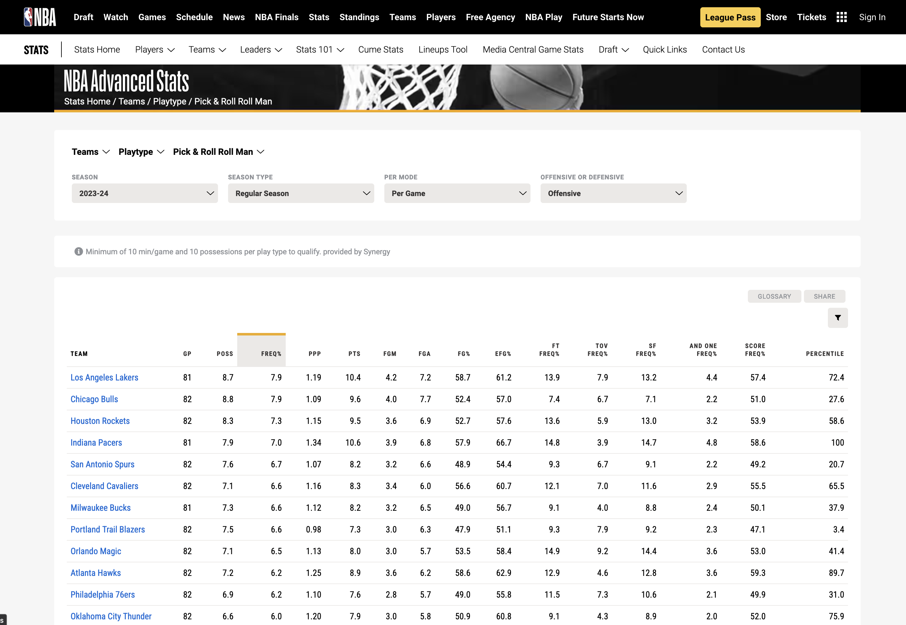

湖人靠裁判？居然还是公开的秘密？数据为你揭露真相。
原文首发于知乎。
湖人靠CP3已经是一个公开的秘密了么？ - Isaac Wang的回答 - 知乎 我就知道这问题早晚会来的。自从湖人罚球净差登顶以来，对湖人裁判的质疑就没少过，以至于罚球净差这种毫无意义的生造概念居然突然间爆火。
是时候来个了结了。
话不多说，数据直接上。所有数据来自nba官网，不信的自己去查。
先说进攻，湖人有没有大量收益赚罚球。
NBA官网把进攻出手方式划分为11种，我们直接看湖人每种方式是使用频率和造罚球频率在联盟中的排名。全部从高到低排。
单打：使用频率12，罚球率9.
转换：使用频率7，罚球率9.
挡拆持球人：使用频率15，罚球率4.
挡拆掩护人：使用率1，罚球率6.

低位：使用率4，罚球率8.
定点：使用率26，罚球率28.
手递手：使用率26，罚球率7.
切入：使用率9，罚球率14.
外拆：使用率28，罚球率12.
补篮：使用率28，罚球率22.
其他：使用率7，罚球率4.
结论：湖人的罚球率，大部分时候就是第10上下，极少进前五，进去了也就是第四。考虑到以詹眉和八村为代表的湖人球员在面对大部分对手时拥有巨大的身体优势（全联盟可能也就掘金等寥寥数队比湖人身体天赋更好）而且罚球并不稳定（罚球命中率只在联盟第15，冲框最凶猛的詹眉八普罚球都不准），对方会更倾向于对湖人犯规，这个造罚球频率完全谈不上高，至于说被照顾更是扯淡。
但问题在于，不同进攻方式本身造罚球难度就不一样。比如定点，全联盟最高的罚球率也才5.8%，而低位进攻全联盟罚球率最低的都有9.2%。这个其实很好理解。按照造罚球的难易程度，最容易造犯规的进攻方式依次是低位、切入、转换、挡拆掩护人、单打。最不容易造罚球的进攻方式由低到高，是定点、外拆、手递手、进攻篮板、挡拆持球。
显而易见。在最容易造罚球的五种方式里，湖人使用频率分别是4,9,7,1,12. 最不容易的方式则依次为26,28,26,28,15。如此极端的进攻方式选择，才是湖人获得了比较多的罚球数的原因。但远远谈不上多的过分，在历史上更是根本排不上号。
再看防守。湖人的犯规数联盟最少。要看到底是湖人自己漏防还是动作大裁判却不吹，也很简单。看看对方到底有没有大量紧贴防守的出手、或者命中有没有下降即可。后者并不绝对，的确存在某些球队又防的好又不犯规。但如果对方命中率一直上升，则显然不会是大量被犯规了没吹，毕竟你能指望一个正常的nba球队每场打出多少个该吹2+1的球？
湖人对手的总体命中率，最新数据是和平均一样，不升不降，排名联盟第13位。但恐怖的是，湖人对手的三分命中率高居联盟第四，对手大空位三分出手频率联盟第三。换句话说，湖人三分线外就不防守，对手投投空位三分就可以拿到基本分。他们投出了大量的三分球并且命中。


仔细想不难发现，湖人的对手在出手了非常多的三分的情况下，总体命中率居然可以持平（要知道三分球哪怕空位命中率也远远不到两分球的平均命中率，投多了是一定会导致总体基础命中率下降的，上升的是则有效命中率），可见湖人不仅仅漏掉了三分球，两分球也是照漏不误。统计数据则是，湖人对手在restricted area（禁区）的命中率高达68.1%，联盟第四。这还是篮下站了个浓眉的情况下打出来的数据。

由此可见，湖人的防守完全不上对抗，对面有机会的球基本能给则给，所以对方才没有罚球。这和观感是相符的。实际上，湖人常规赛最后一次战太阳时，篮板球被抢爆，当时直播信号正好给到了教练席。在湖人身体对抗被全方位碾压、篮板球被完虐十几个时，哈姆一直喊的是不要犯规。我甚至怀疑湖人是不是觉得送罚球少是比防住人更基本的目标。
实际上，湖人的防守不仅仅是不愿意陪犯规的问题。他们的防守到位率也很低。他们的对手出手紧贴防（防守人距离0-2英尺）下投篮的频率只有联盟倒数第三，出手大空位的频率却是联盟第二。防守人就没贴上去，何谈犯规？


一套数据看下来，湖人的攻防总结如下：进攻靠怼人，防守靠眼神。自己辛苦找对抗，对面轻松投三分。这种打法，罚球净差能不大么？而湖人的对手骂罚球的时候，你们是想让自己的进攻和湖人一样停滞，还是想让自己的防守和湖人一样漏风？
事实上，季中赛的三场淘汰赛，湖人罕见的拿出了防守强度，同时犯规自然大量赔上。那几场，湖人的罚球除去战术犯规基本与对手持平甚至落后，对于罚球差的讨论忽然就消失了，所有的裁判争议全部集中在了打太阳那场最后的那个暂停上，和罚球半点关系都没有。可见湖人的罚球差完全是自己的选择，不关裁判什么事。而舆论也是选择性失明，真相什么的，哪有找茬黑湖人和詹姆斯重要啊？
也正是由于这样的打法，湖人才十分依赖罚球。但是，依赖罚球，和收到照顾，是完全两个概念。就像社畜依赖工资过活，但你绝不能说他的工资就不是该得的、是老板照顾他送他的。恰恰相反，越是依赖某样事物，就越是容易被这件事情拿捏，才是亘古不变的真理。
事情真的就这么发生了。刚过去的湖矿G2，很多詹黑大V都不得不公开承认裁判在帮掘金。欺负湖人太简单了，只要允许对方对抗少给几个该给的罚球，湖人马上兵败如山倒，20分的优势只需要一节半就化为乌有。我听说湖人在被照顾？那为什么在湖人过去十场湖矿对决中打得最好最有希望赢的一次，裁判却决绝的拿走了胜利？去年湖人被0-4，获得是哨子福利顶破天也就是横扫局正常的卖票哨，却被当做一年的谈资，被无数人试图借此证明詹姆斯一辈子都在靠哨子。但20年湖人总决赛被热火罚的昏天黑地，以至于湖黑再也不敢谈论裁判的事情，却在湖人夺冠之后被湖人球迷一笑了之，从此基本没在被提起过。舆论在乎的是公平、真相么？恐怕不是吧？
虎扑早也有人给出了数据。过去十年间，罚球净差远远大于湖人的球队比比皆是，2013年湖人的罚球净差更是突破天际。詹姆斯整个生涯，尤其是2010-2020这十年间，从来都不是罚球净差上的优势者，甚至是劣势者（例如2013总决赛热火有6场罚球少于对手，1场持平）。这些事情从来没有人提，因为本就不该提，罚球差原本就是伪概念。但詹姆斯的球队生涯唯一一次罚球净差领先联盟的时候，这个数字却成为了判断裁判是否照顾的唯一判据。此种言论用心之险恶、逻辑之滑稽，不需要多说了吧？